x<-c(28,23,19)
y<-c(-26,-30,-33)
data<-c("yes","yes","no")
xydata<-tibble(x,y,data)
xydata# A tibble: 3 × 3
x y data
<dbl> <dbl> <chr>
1 28 -26 yes
2 23 -30 yes
3 19 -33 no Because sf objects are effectively tables, the process of making our own spatial data is relatively straightforward. Here, we’ll create three vectors. The first two will hold some x and y coordinates, while the last will be some made-up yes/no data. We’ll then combine these into a tibble called xydata:
x<-c(28,23,19)
y<-c(-26,-30,-33)
data<-c("yes","yes","no")
xydata<-tibble(x,y,data)
xydata# A tibble: 3 × 3
x y data
<dbl> <dbl> <chr>
1 28 -26 yes
2 23 -30 yes
3 19 -33 no Keep in mind here that the negative numbers, which are on the y (latitude) axis, mean they are south of the equator. Most of the information we need to convert this into spatial data is here. We can use the st_as_sf function to go from a table to an sf object:
pointData<-st_as_sf(xydata,coords=c("x","y"))
pointDataSimple feature collection with 3 features and 1 field
Geometry type: POINT
Dimension: XY
Bounding box: xmin: 19 ymin: -33 xmax: 28 ymax: -26
CRS: NA
# A tibble: 3 × 2
data geometry
<chr> <POINT>
1 yes (28 -26)
2 yes (23 -30)
3 no (19 -33)The two arguments to st_as_sf here are the name of the table, and then the coords argument, which tells the function which columns the geometry data are stored in (in this case, the X and Y columns).
The result looks a little different from what we’ve seen before, where the summary is presented as separate from the data table. The reason is that st_as_sf was principally designed to convert other spatial data formats that are built around Base R and the dataframe structure, making the package better at dealing with legacy code. However, this won’t make much difference in our ability to use the data:
ggplot() +
geom_sf(data=pointData)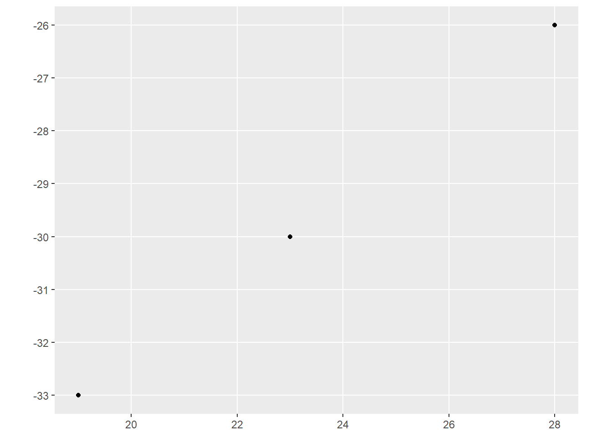
The bigger issue here is that our data don’t yet have a CRS. The CRS tells R which coordinate reference system our coordinates are in. To add one, we can use the st_crs function around our new dataset, and then assign a value:
st_crs(pointData)<-4326By assigning a number to this, we are now giving the object a CRS. But why did we assign 4326? This number is an ESPG code, developed by the European Petroleum Survey Group for the registration of geodetic datums. This specific number refers to the WGS84 datum, which is the standard used for global positioning systems.
Perhaps not so coincidentally, our South African data from the last section also use the CRS:
saBorder<-st_read("data/south_africa_border.shp",quiet=TRUE)
st_crs(saBorder)Coordinate Reference System:
User input: WGS 84
wkt:
GEOGCRS["WGS 84",
DATUM["World Geodetic System 1984",
ELLIPSOID["WGS 84",6378137,298.257223563,
LENGTHUNIT["metre",1]]],
PRIMEM["Greenwich",0,
ANGLEUNIT["degree",0.0174532925199433]],
CS[ellipsoidal,2],
AXIS["latitude",north,
ORDER[1],
ANGLEUNIT["degree",0.0174532925199433]],
AXIS["longitude",east,
ORDER[2],
ANGLEUNIT["degree",0.0174532925199433]],
ID["EPSG",4326]]This means that we can plot these two together without any distortion, like so:
ggplot() +
geom_sf(data=saBorder) +
geom_sf(data=pointData)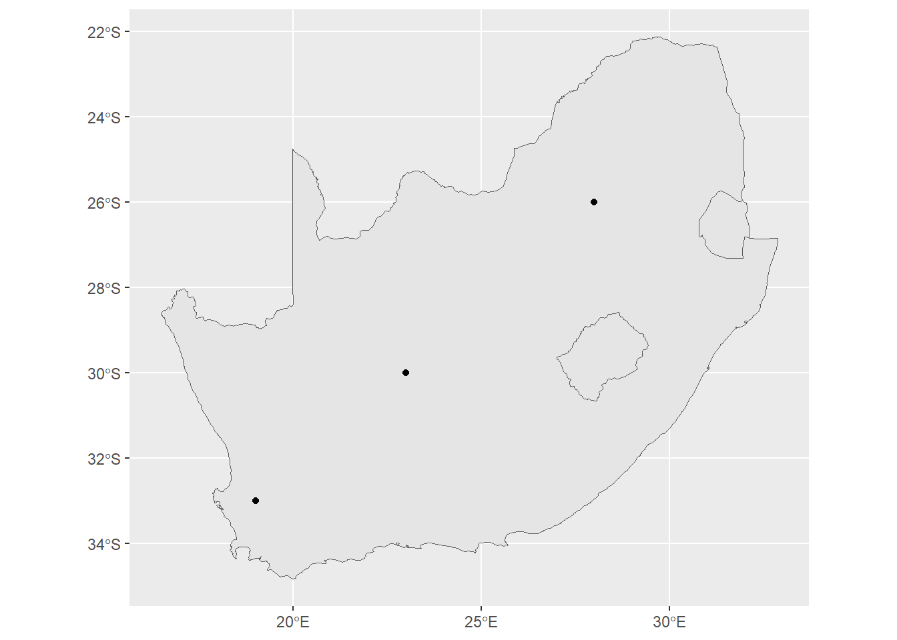
Keep in mind that you can do this with just about any data table in R that has coordinates. For example, looking at our Sacramento data:
library(modeldata)
sacSpat<-st_as_sf(Sacramento,coords=c("longitude","latitude"))
ggplot()+
geom_sf(data=sacSpat, aes(color=type))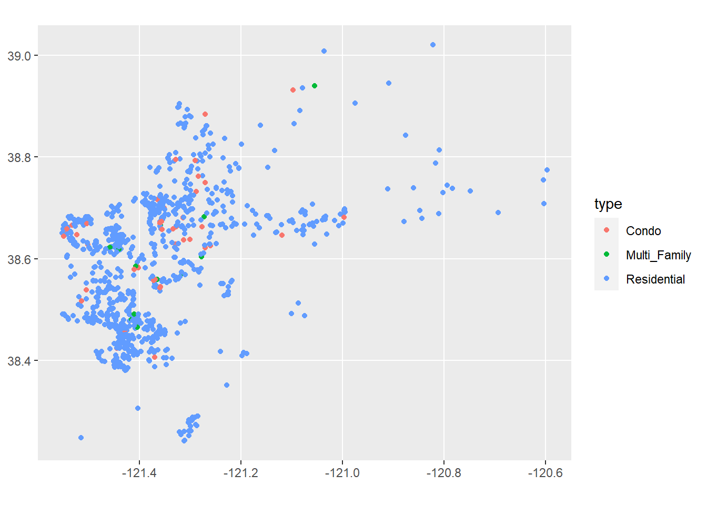
Of course, for this map to work it would be helpful to see it on a map of Sacramento. We’ll look at ways to do this in a moment.
Vector data can be used to answer questions related to spatial relationships between different things. We can access these using methods that operate on the data tables, using techniques we’ve learned in data wrangling, as well as the spatial data itself.
For example, let’s say that a study showed that the top threat to a species of moths on the Cape Cod islands was vehicle interactions. A commission on Martha’s Vineyard wants us to assess where moths are most threatened on the island. So we’re interested in looking at the relationship between the moth’s preferred habitat, and where that might overlap with traffic.
First, we’ll load in data of the islands coasts. We can use slice_max from dplyr to get the largest island, which is Martha’s Vineyard.
coasts<-st_read("data/island_outline.shp",quiet=TRUE)
mv<-slice_max(coasts,Shape_Area)
ggplot() +
geom_sf(data=mv)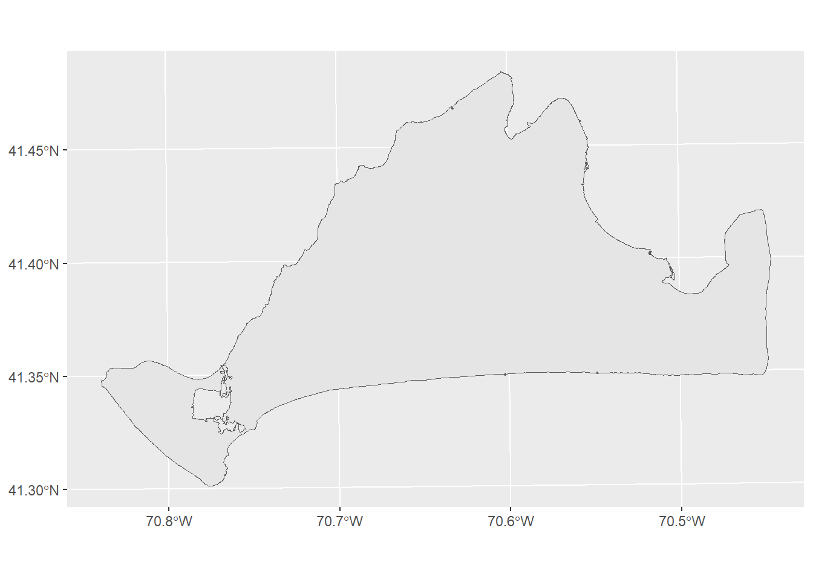
Next, we’ll load in some data on the roads. But our road data covers both Martha’s Vineyard and Nantucket.
roads<-st_read("data/island_roads.shp",quiet=TRUE)
ggplot() +
geom_sf(data=roads)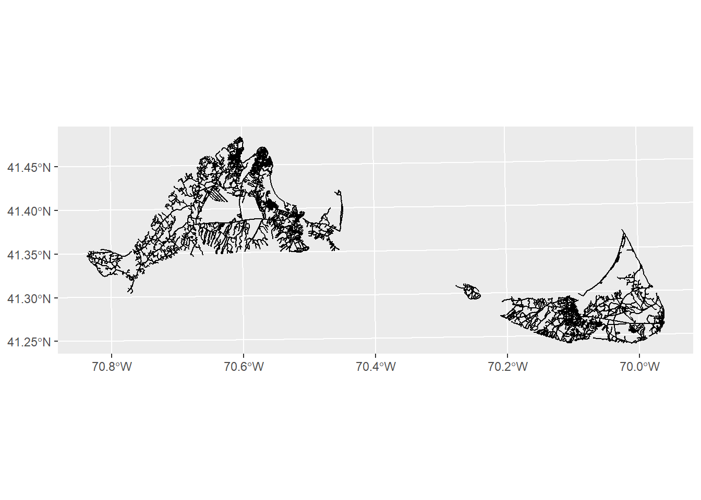
No problem. We can subset to just the roads on Martha’s Vineyard by using the st_intersection function:
mvRoads<-st_intersection(roads,mv)Warning: attribute variables are assumed to be spatially constant throughout
all geometriesggplot()+
geom_sf(data=mvRoads)This function takes two arguments at minimum: the first is the dataset of interest (roads), and the second is the dataset it is interacting with (mv). The result, as you can see, is any roads that intersect with our mv object.
Now we need to know something about habitat distributions. We can use the island_landuse.shp file, but like our roads, we’ll need to subset it to Martha’s vineyard only.
landuse<-st_read("data/island_landuse.shp",quiet=TRUE)
mvLanduse<-st_intersection(landuse,mv)Warning: attribute variables are assumed to be spatially constant throughout
all geometriesggplot()+
geom_sf(data=mv) +
geom_sf(data=mvLanduse)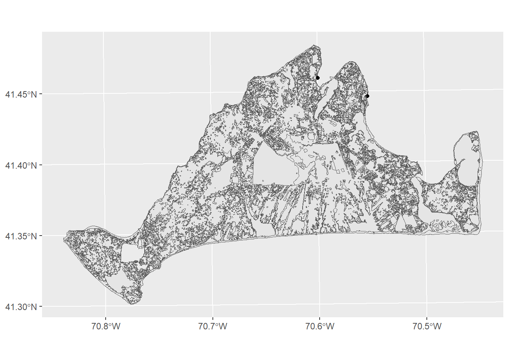
There’s a few different variables in this data, but the one that’s most likely to help us figure out habitats and threats is the LU05_DESC, which is a description of landuse on a parcel of land as observed in 2005. The moth lives in Open as well as Brushland/ Successional habitats. We can subset to just these with the filter function
preferredHabitats<-filter(mvLanduse,LU05_DESC %in% c("Open Land", "Brushland/Successional"))
ggplot()+
geom_sf(data=mv) +
geom_sf(data=preferredHabitats,fill="darkgreen")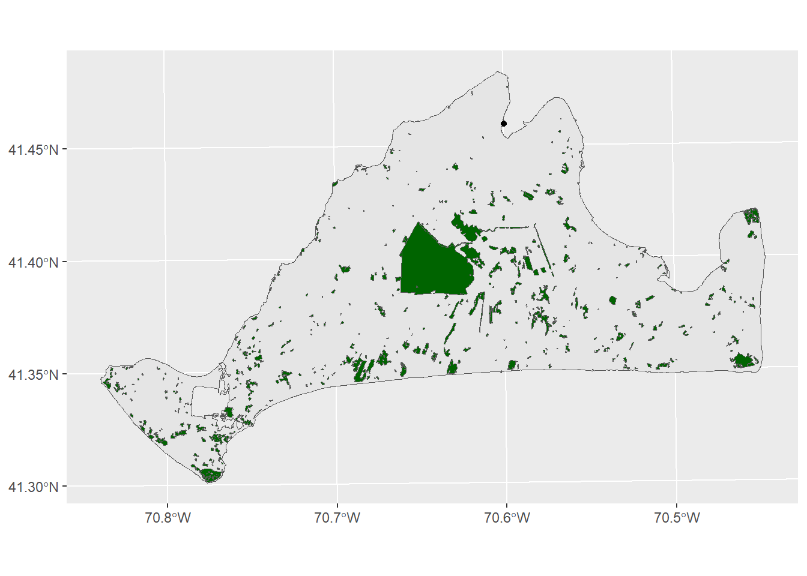
OK, now we have everything we need. Let’s say the study found that most damage to moth populations occurred within 50 meters of a road. We can evaluate this relationship by using a buffer. A buffer creates a polygon at some even distance around a feature. This is useful when you want to see or measure how many instances of one thing fall within some distance of another.
The function we want to use for this is st_buffer, which will take as arguments the name of the object being buffered (in this case, the mvRoads) and a distance (in the default units here, 50):
roadBuffer<-st_buffer(mvRoads,50)
ggplot()+
geom_sf(data=roadBuffer)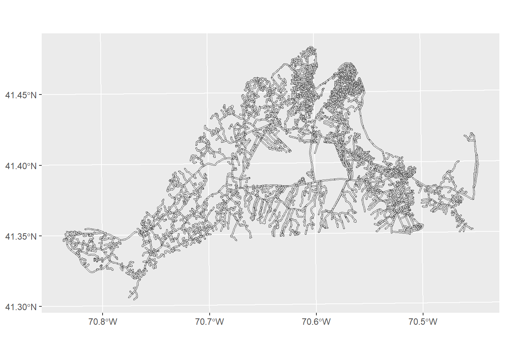
As you can see (though maybe not clearly) from this image, the lines where the roads are have now been surrounded by a polygon, giving us the area around the roads that are most dangerous for moths. Now we can look at the threat relationship between these preferred habitats and roads using the st_intersection function:
roadThreat<-st_intersection(preferredHabitats,roadBuffer)Warning: attribute variables are assumed to be spatially constant throughout
all geometriesggplot()+
geom_sf(data=mv) +
geom_sf(data=mvRoads) +
geom_sf(data=roadThreat,fill="red",color=NA)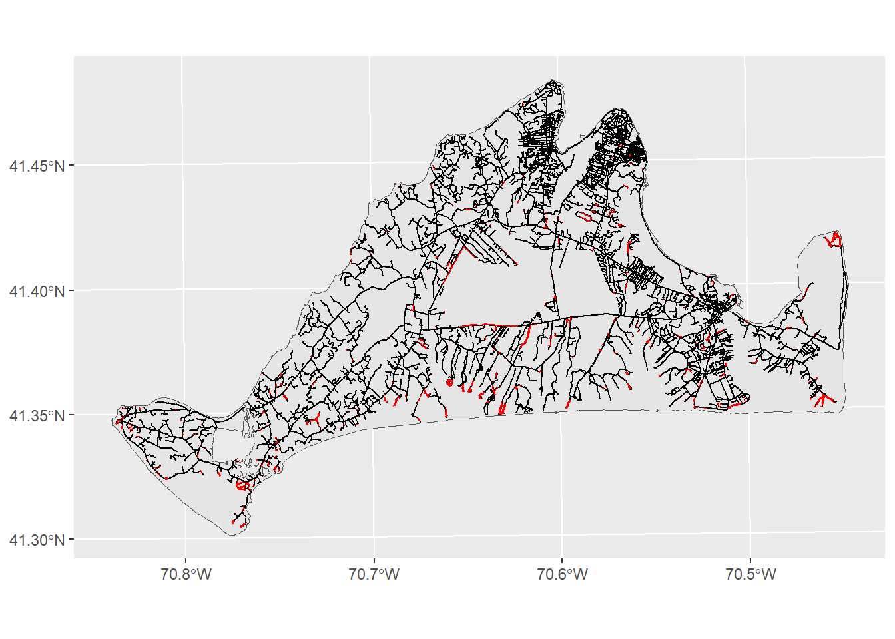
This map shows us where the months are most , though perhaps it could do better at communicating these ideas. We can modify the look of figure to make sure the headline is clear:
ggplot()+
geom_sf(data=mv,fill="grey90",color=NA) +
geom_sf(data=mvRoads,color="darkgrey") +
geom_sf(data=roadThreat,fill="red",color=NA) +
theme_void() +
labs(title="Where the moths of Martha's Vineyard are most threatened", subtitle="Red indicates areas of high probability of road strike")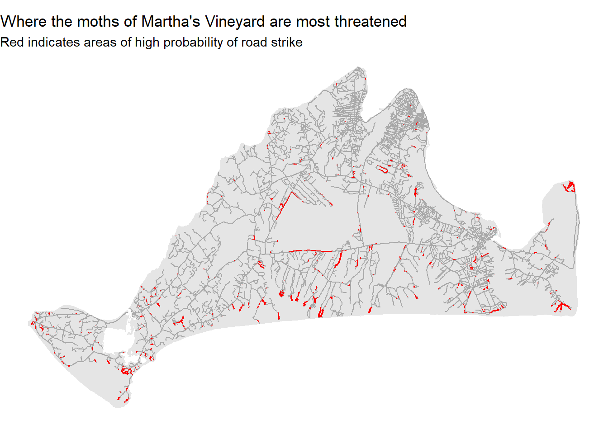
More often than not, you may want to do some kind of analysis or visualization only to find you have one variable stored in one dataset, and another stored in another dataset. This can be a bit frustrating, but there are tools. The most helpful of these is the left_join function. This takes two datasets and uses a common shared variable to join them together. This can be particularly helpful when some
This can be particularly helpful when you have table data and want to map it. Let’s say we wanted to view our 2007 life expectancy data from the gapminder dataset as a map. First, we’ll subset bring in that data and subset it to just 2007 and just the country and lifeExp columns:
library(gapminder)
gm2007<-gapminder |>
filter(year==2007) |>
select(country,lifeExp)
gm2007# A tibble: 142 × 2
country lifeExp
<fct> <dbl>
1 Afghanistan 43.8
2 Albania 76.4
3 Algeria 72.3
4 Angola 42.7
5 Argentina 75.3
6 Australia 81.2
7 Austria 79.8
8 Bahrain 75.6
9 Bangladesh 64.1
10 Belgium 79.4
# ℹ 132 more rowsNext, we’ll bring in a shapefile of world country boundaries, obtained from the very helpful website Natural Earth:
worldCountries<-st_read("data/world.shp",quiet=TRUE)
ggplot() +
geom_sf(data=worldCountries)
This dataset has a lot of variables, most of them relating to database management. For now, we’ll cut this down to just the columns with the country name and its subregion.
worldCountries<-worldCountries |>
select(name,subregion)
worldCountriesSimple feature collection with 241 features and 2 fields
Geometry type: MULTIPOLYGON
Dimension: XY
Bounding box: xmin: -180 ymin: -89.99893 xmax: 180 ymax: 83.59961
Geodetic CRS: GCS_unknown
First 10 features:
name subregion geometry
1 Aruba Caribbean MULTIPOLYGON (((-69.89912 1...
2 Afghanistan Southern Asia MULTIPOLYGON (((74.89131 37...
3 Angola Middle Africa MULTIPOLYGON (((14.19082 -5...
4 Anguilla Caribbean MULTIPOLYGON (((-63.00122 1...
5 Albania Southern Europe MULTIPOLYGON (((20.06396 42...
6 Aland Northern Europe MULTIPOLYGON (((20.61133 60...
7 Andorra Southern Europe MULTIPOLYGON (((1.706055 42...
8 United Arab Emirates Western Asia MULTIPOLYGON (((53.92783 24...
9 Argentina South America MULTIPOLYGON (((-64.54917 -...
10 Armenia Western Asia MULTIPOLYGON (((45.55234 40...OK, now we have our two datasets, with one column that contains the same value: the country name. In the gm2007 dataset, it’s in the country column, while in the worldCountries dataset, it’s stored as name.
We can use left_join to put these two datasets together:
gmJoin1<-left_join(worldCountries,gm2007,by=c("name"="country"))
gmJoin1Simple feature collection with 241 features and 3 fields
Geometry type: MULTIPOLYGON
Dimension: XY
Bounding box: xmin: -180 ymin: -89.99893 xmax: 180 ymax: 83.59961
Geodetic CRS: GCS_unknown
First 10 features:
name subregion lifeExp geometry
1 Aruba Caribbean NA MULTIPOLYGON (((-69.89912 1...
2 Afghanistan Southern Asia 43.828 MULTIPOLYGON (((74.89131 37...
3 Angola Middle Africa 42.731 MULTIPOLYGON (((14.19082 -5...
4 Anguilla Caribbean NA MULTIPOLYGON (((-63.00122 1...
5 Albania Southern Europe 76.423 MULTIPOLYGON (((20.06396 42...
6 Aland Northern Europe NA MULTIPOLYGON (((20.61133 60...
7 Andorra Southern Europe NA MULTIPOLYGON (((1.706055 42...
8 United Arab Emirates Western Asia NA MULTIPOLYGON (((53.92783 24...
9 Argentina South America 75.320 MULTIPOLYGON (((-64.54917 -...
10 Armenia Western Asia NA MULTIPOLYGON (((45.55234 40...The arguments here work as follows: first we give it a dataset (here the worldCountries data). This is the data that we are joining to, so the output will look like worldCountries but with some additional variables from other dataset, the gm2007 tibble. This is the second argument. Finally, the by argument allows us to say which column from the first dataset matches which column in the second dataset.
Our new sf object now has the two columns from the original Natural Earth data (name and subregion), as well as a new column for lifeExp that comes from the gm2007 data. Now we can plot our data and see what it looks like spatially.
ggplot() +
geom_sf(data=gmJoin1,aes(fill=lifeExp))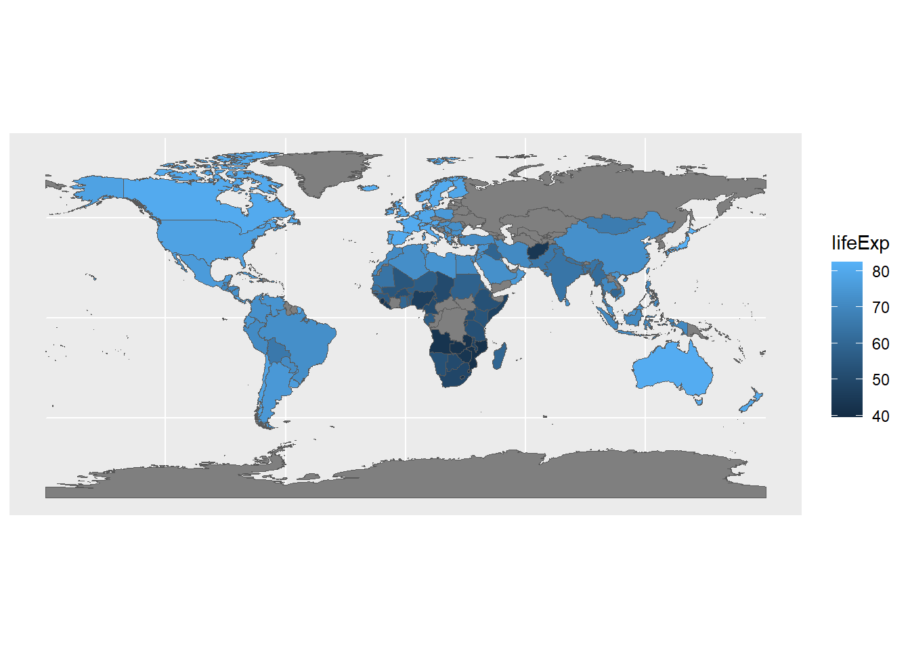
Now we can see how the gapminder data looks on a familiar image: the world map. It’s also interesting to see where data isn’t available; this is less obvious when working with the table data.
This process will also work with two tables, or with two different sets of spatial data. As long as they can be linked by some common key value (here, the names of countries), you can combine them into a single dataset that can then be used for analysis and visualization.
The left_join works by joining the first object (the leftmost one in the function call) to a second. What happens when you reverse the order of the input data? In other words can you join gm2007 tibble to the worldCountries sf object? Can you create boxplots of life expectancy based on subregion?
There are many additional ways you might want to manipulate spatial data in R. Unfortunately, going into them in detail is outside the scope of this course. For now, if you’re interested in learning more, the book Geocomputation with R gives an excellent survey of spatial data manipulation.